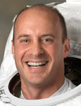

Lyndon B. Johnson Space Center
Houston, Texas 77058
|
National Aeronautics and Space Administration Lyndon B. Johnson Space Center Houston, Texas 77058 |
 |
Biographical Data |
||
Garrett E. Reisman (Ph.D.)
NASA Astronaut (FORMER)
PERSONAL DATA: Born February 10, 1968, in Morristown, New Jersey, but considers Parsippany, New Jersey, to be his hometown. Recreational interests include flying, skiing, snowboarding, rock climbing, mountaineering, canyoneering and scuba diving. Dr. Reisman is an FAA certified flight instructor. His parents are Sheila Reisman of Boynton Beach, Florida, and the late Robert Reisman. His sister, Lainie Reisman, is an international youth violence prevention specialist, who currently resides in Nairobi, Kenya.
EDUCATION:
Parsippany High School, Parsippany, New Jersey, 1986
B.S., economics, University of Pennsylvania, 1991
B.S., mechanical engineering and applied mechanics, University
of Pennsylvania, 1991
M.S., mechanical engineering, California Institute of Technology, 1992.
Ph.D., mechanical engineering, California Institute of Technology, 1997.
EXPERIENCE: From 1996 to 1998, Dr. Reisman was employed by TRW as a spacecraft guidance, navigation and control engineer in the Space and Technology Division, Redondo Beach, California. While at TRW, he designed the thruster-based attitude control system for the NASA Aqua spacecraft.
Prior to his employment at TRW, Dr. Reisman was a Ph.D. candidate at Caltech in the Division of Engineering and Applied Science in Pasadena, California. His multiphase fluid mechanics research provided the first experimental evidence of the presence of shock waves in unsteady cloud cavitation.
NASA EXPERIENCE: Selected by NASA as a mission specialist in June 1998, Dr. Reisman reported for training in August 1998. Astronaut Candidate Training included orientation briefings and tours, numerous scientific and technical briefings, intensive instruction in shuttle and International Space Station (ISS) systems, physiological training and ground school to prepare for T-38 flight training as well as learning water and wilderness survival techniques.
After completing this training, Dr. Reisman was assigned to the Astronaut Office Robotics Branch where he worked primarily on the ISS robotic arm.
In October 2001, Dr. Reisman was assigned to the Astronaut Office Advanced Vehicles Branch, where he worked on the displays and checklists to be used in the next-generation space shuttle cockpit.
In June 2003, Dr. Reisman was a crewmember on NEEMO V, living on the bottom of the sea in the Aquarius habitat for 2 weeks.
Dr. Reisman completed his first space flight in 2008, logging more than 3 months in space and 7 hours and 01 minute of EVA in one spacewalk. In 2010, he completed his second mission on the crew of STS-132 and logged an additional 11 days, 18 hours, 28 minutes and 2 seconds in space, including two more spacewalks for a total of 21 hours and 12 minutes of EVA in three spacewalks.
Dr. Reisman left NASA in March 2011 and is currently working for SpaceX in Hawthorne, California.
SPACE FLIGHT EXPERIENCE: During his first space mission, Dr. Reisman served with both the Expedition 16 and Expedition 17 crews as a flight engineer aboard the ISS. He launched with the STS-123 crew aboard the Space Shuttle Endeavour on March 11, 2008 and returned to Earth with the crew of STS-124 aboard the Space Shuttle Discovery on June 14, 2008. During his 3-month tour of duty aboard the ISS, Dr. Reisman performed one spacewalk totaling 7 hours and 01 minutes of EVA and executed numerous tasks with the ISS robotic arm and the new robotic manipulator, Dextre.
During Dr. Reisman’s second space mission, STS-132, he served as mission specialist 1 aboard the Space Shuttle Atlantis, which launched on May 14, 2010. During the STS-132 mission, Dr. Reisman operated the ISS robotic arm and installed the Russian-built Mini Research Module to the ISS. During 7 days of docked operations, Dr. Reisman conducted two spacewalks, logging 14 hours and 11 minutes of EVA. During these two spacewalks, Dr. Reisman installed a spare antenna and a stowage platform for Dextre, replaced the last of the P6 truss batteries and retrieved a power data grapple fixture. The STS-132 mission was completed in 186 orbits, traveling 4,879,978 miles in 11 days, 18 hours, 28 minutes and 2 seconds.
JUNE 2011